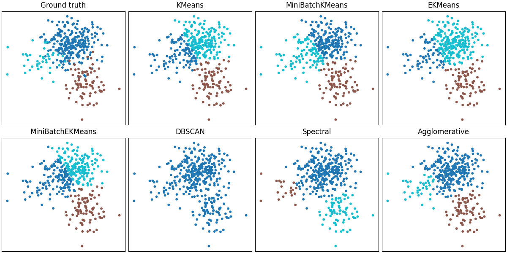

Note
Go to the end to download the full example code.
Imbalanced clustering comparison on a synthetic dataset (2x4 layout)#
This example reproduces the imbalanced 3-cluster Gaussian mixture used in
benchmark/benchmark.py and compares the clustering results of multiple
algorithms in a 2x4 grid:
Ground truth
scikit-learn: KMeans, MiniBatchKMeans, DBSCAN, SpectralClustering, AgglomerativeClustering
sklekmeans: EKMeans, MiniBatchEKMeans
Each panel shows the assigned labels and, when applicable, cluster centers. Titles include Adjusted Rand Index (ARI) and Silhouette scores (when available).
MiniBatchEKMeans failed: MiniBatchEKMeans.__init__() got an unexpected keyword argument 'n_init'. Did you mean 'init'?
import numpy as np
import matplotlib.pyplot as plt
from sklearn.datasets import make_blobs
from sklearn.cluster import (
KMeans as SKKMeans,
MiniBatchKMeans as SKMiniBatchKMeans,
DBSCAN,
SpectralClustering,
AgglomerativeClustering,
)
from sklearn.metrics import adjusted_rand_score, silhouette_score
from sklekmeans import EKMeans, MiniBatchEKMeans
# Same dataset configuration as benchmark/benchmark.py
N_SAMPLES = [2000, 50, 30] # Strong imbalance
CENTERS = [(-5, -2), (0, 0), (5, 5)]
STD = [1.0, 1.0, 1.0]
N_CLUSTERS = 3
RANDOM_STATE = 0
X, y_true = make_blobs(
n_samples=N_SAMPLES,
centers=CENTERS,
cluster_std=STD,
random_state=RANDOM_STATE,
)
algorithms = [
("KMeans", lambda: SKKMeans(n_clusters=N_CLUSTERS, n_init=10, random_state=RANDOM_STATE)),
(
"MiniBatchKMeans",
lambda: SKMiniBatchKMeans(n_clusters=N_CLUSTERS, n_init=10, random_state=RANDOM_STATE),
),
("EKMeans", lambda: EKMeans(n_clusters=N_CLUSTERS, n_init=10, random_state=RANDOM_STATE, alpha="dvariance")),
(
"MiniBatchEKMeans",
lambda: MiniBatchEKMeans(n_clusters=N_CLUSTERS, n_init=10, random_state=RANDOM_STATE, batch_size=256, max_epochs=10),
),
("DBSCAN", lambda: DBSCAN(eps=0.7, min_samples=5)),
(
"Spectral",
lambda: SpectralClustering(
n_clusters=N_CLUSTERS,
assign_labels="kmeans",
random_state=RANDOM_STATE,
affinity="nearest_neighbors",
n_neighbors=10,
),
),
("Agglomerative", lambda: AgglomerativeClustering(n_clusters=N_CLUSTERS, linkage="ward")),
]
def safe_silhouette(X, labels):
# Silhouette requires at least 2 clusters and less than n_samples unique labels
vals = np.unique(labels)
if len(vals) < 2 or (len(vals) == 1 and vals[0] == -1):
return None
try:
return float(silhouette_score(X, labels))
except Exception:
return None
rows, cols = 2, 4
fig, axes = plt.subplots(rows, cols, figsize=(3.2 * cols, 2.7 * rows), constrained_layout=True)
axes = axes.ravel()
# Panel 0: Ground truth
axes[0].scatter(X[:, 0], X[:, 1], c=y_true, s=10, cmap="tab10", alpha=0.8)
axes[0].set_title("Ground truth")
axes[0].set_xticks([])
axes[0].set_yticks([])
# Remaining panels: algorithms
for idx, (name, make_algo) in enumerate(algorithms, start=1):
ax = axes[idx]
try:
model = make_algo()
if hasattr(model, "fit_predict"):
labels_pred = model.fit_predict(X)
else:
model.fit(X)
labels_pred = getattr(model, "labels_", None)
if labels_pred is None and hasattr(model, "predict"):
labels_pred = model.predict(X)
ari = adjusted_rand_score(y_true, labels_pred)
sil = safe_silhouette(X, labels_pred)
title_metrics = f"ARI={ari:.3f}"
if sil is not None:
title_metrics += f", Sil={sil:.3f}"
title = f"{name} ({title_metrics})"
except Exception as e:
labels_pred = np.full(X.shape[0], -1)
title = f"{name} (error)"
print(f"{name} failed: {e}")
ax.scatter(X[:, 0], X[:, 1], c=labels_pred, s=10, cmap="tab10", alpha=0.8)
# Plot centers for algorithms that expose them
centers = None
if hasattr(model, "cluster_centers_"):
centers = getattr(model, "cluster_centers_")
if centers is not None:
ax.scatter(
centers[:, 0],
centers[:, 1],
c="black",
s=120,
marker="X",
edgecolor="white",
linewidths=1,
)
ax.set_title(title)
ax.set_xticks([])
ax.set_yticks([])
# If fewer than 8 panels were used (shouldn't happen), hide extras
for j in range(1 + len(algorithms), rows * cols):
axes[j].axis("off")
plt.show()
Total running time of the script: (0 minutes 3.849 seconds)